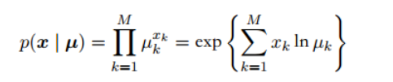

指数族分布
参数为 \(\eta\) 的变量为 \(x\) 的指数族分布的定义为：
这里 \(\eta\) 被称为概率分布的自然参数，\(g(\eta)\) 可以被看成系数，它确保概率分布的归一化。
接下来证明我们本章讨论过的概率分布的例子确实可以表示成这种形式。
- 伯努利分布：
我们可以看出 \(\eta=\frac{\mu}{1-\mu}\)
从中我们可以解出 \(\mu=\sigma(\eta)\) ，其中：
我们可以把伯努利分布写成这样：
- 多项式分布：

我们可以把它写成：
其中 \(\eta_k=ln \ \mu_k\)
但是这些 \(x_k\) 和 \(\mu_k\) 是有限制的：
$$\sum_k x_k=1$$
$$\sum_k \mu_k=1$$
因此给定 M-1 个参数 \(x_k\) 和 \(\mu_k\) ，剩下的参数就固定了，去掉这个限制，即只用 M-1 个参数来表示这个分布：
定义
那么 \(\mu_k\) 就可以这样表示：
然后多项式分布就可以这样表示：
其中 \(\eta=(\eta_1,…,\eta_{M-1})^T\)
- 高斯分布：
经过一些推导它可以被表示成这样：
最大似然与充分统计量
我们用最大似然法估计一般形式下的指数族分布的参数向量 \(\eta\)，要满足概率和为1
这个式子对 \(\eta\) 求梯度：
整理可得：
现在考虑一组独立同分布的数据 X=\(\{x_1,…x_N \}\)，它的似然函数为：
对 \(ln \ p(X|\eta)\) 关于 \(\eta\) 求导，得到 \(\eta_{ML}\)
我们可以通过这个式子得到 \(\eta_{ML}\)，它只依赖于右边那个和式，这个量被称为充分统计量。我们不需要存储整个数据集，只需要存储充分统计量。比如对于高斯分布 \(u(x)=(x,x^2)^T\)，只需要存储 {\(x_n\)} 的和 以及 {\(x_n^2\)} 的和。
如果 N 趋于无穷，那么右边就变成了 \(E(u(x))\) ，我们可以看到，在极限的情况下，\(\eta_{ML}\)与真实值 \(\eta\) 相等。
共轭先验
对于任意一个给定的概率分布 \(p(x|\eta)\) 我们可以找到一个先验 \(p(\eta)\) 使其与似然函数共轭从而使得后验的函数形式与先验分布相同。对于指数族分布的任何成员，都存在一个共轭先验：
我们可以得到后验：
可以看出它与先验分布有着相同的函数形式，我们可以把参数 \(v\) 看成先验分布中假想观测的有效观测数，每个假想观测都对充分统计量 \(u(x)\) 有贡献
无信息先验
很多情况下我们不具有先验知识，所以就无法找到合理的先验分布，这种情况下可以使用无信息先验。这种先验的目的是尽量对后验分布产生小的影响 “letting the data speak for themselves”
非参数化方法
非参数方法对概率分布的形式进行很少的假设。
核密度估计
我们假设观测服从 D 维空间的某个位置的概率密度 p(x) ，我们把这个空间选为欧氏空间，想要估计 p(x) 的值，让我们考虑包含 x 的某个小区域 R，这个区域的概率质量为：
假设收集了服从该分布的 N 次观测，由于每个数据点都有一个落在区域 R 中的概率 P，所以位于 R 中的数据点总数 K 服从二项分布：

所以：
$$E(\frac{K}{N})=P$$
$$var(\frac{K}{N})=\frac{P(1-P)}{N}$$
对于大的 N 值，这个分布会在均值附近产生尖峰，且：
假定 区域 R 足够小，使得在这个区域内的概率 p(x) 趋近于常数，那么有：
V 是 区域 R 的体积，所以我们得到概率密度的估计：
注意这个依赖于两个互相矛盾的条件：区域 R 要足够小，这使得这个区域内的概率密度近似为常数，但也要足够大，使得落在这个区域内的数据点的数量 K 能够让二项分布达到尖峰。
可以有两种方式来利用这个结果：
- 固定 K 然后从数据中确定 V ，这就是 K 近邻法
- 固定 V 然后从数据中确定 K，这就是核方法
在 N 趋于无穷时，如果 V 随着 N 而合适的收缩，且 K 随着 N 增大，那么可以证明 K 近邻概率密度估计和核方法都能收敛到真实的概率密度。
先讨论核方法。
首先我们把区域 R 取成 以 x 为中心的小超立方体，定义：
这表示以原点为中心的单位立方体，如果数据点 \(x_n\) 位于 以 x 为 中心 边长为 h 的立方体中，那么 \(k(\frac{x-x_n}{h})\) 等于1，否则为0，所以位于这个立方体内数据点的总数为：
然后就可以得到 x 处的概率密度估计：
这里我们使用了 D 维边长为 h 的立方体的体积公式 \(V=h^D\) 。
核密度估计有个问题就是它不连续，但是我们可以选择平滑的核函数，这样就可以得到更加光滑的模型，一个常见的选择是高斯核函数：
参数 h 对平滑参数起到重要的作用，小的 h 会造成模型对噪声过于敏感，而大的 h 会造成过度平滑，因此需要一个折中
核函数可以任意选择，只要满足：
这种方法不需要显式地训练，只需要存储训练集即可，但是计算代价随着数据集规模增大而线性增长。
近邻方法
核方法的一个问题是控制核宽度的 h 对所有核都是固定的，在数据密度高的区域，大的 h 可能会造成过度平滑，因此 h 的最优选择依赖于数据空间的位置，这个问题可以通过近邻方法解决。
近邻方法是固定 K 然后确定合适的 V 。我们考虑以 x 为中心的球体，允许球体半径自由增长直至包含 K 个数据点，其 V 就是最终球体的体积，这种方法称为 K 近邻法。在这里由 K 控制光滑的程度，与之前一样， K 的最优选择不能过大也不能过小。
最后我们介绍一下如何将 K 近邻方法推广到分类问题。我们把 K 近邻法分别应用到每个独立的类别中，然后使用贝叶斯定理。
假设数据集中，类别 \(C_k\) 有 \(N_k\) 个数据点，数据点总数为 N，如果我们想对新的数据点 x 分类，那么我们画一个以 x 为中心的球体，这个球体精确的包含 K 个数据点（无论属于哪个类别）。假设球体体积为 V，并且包含来自类别 \(C_k\) 的 \(K_k\) 个数据，于是我们可以这样估计在 类别 \(C_k\) 下 x 发生的概率：
无条件概率密度：
类先验：
然后使用贝叶斯定理：
所以给定一个新的数据点，我们从训练数据中选择 K 个最近的数据点，然后将新的数据点分配给这个集合中数量最多的点的类别。
K 控制了光滑的程度，小的 K 值会使得每个类别有许多小区域，而大的 K 值会产生数量较少面积较大的区域。
但不管是 K近邻法还是核密度估计法，都需要存储整个训练数据，如果数据集很大的话会造成很大的计算代价。我们可以建立一个基于树的搜索结构，使得近似最近邻可以高效的找到，不必遍历整个数据集。尽管这样，这些非参数方法仍然有很大局限性。